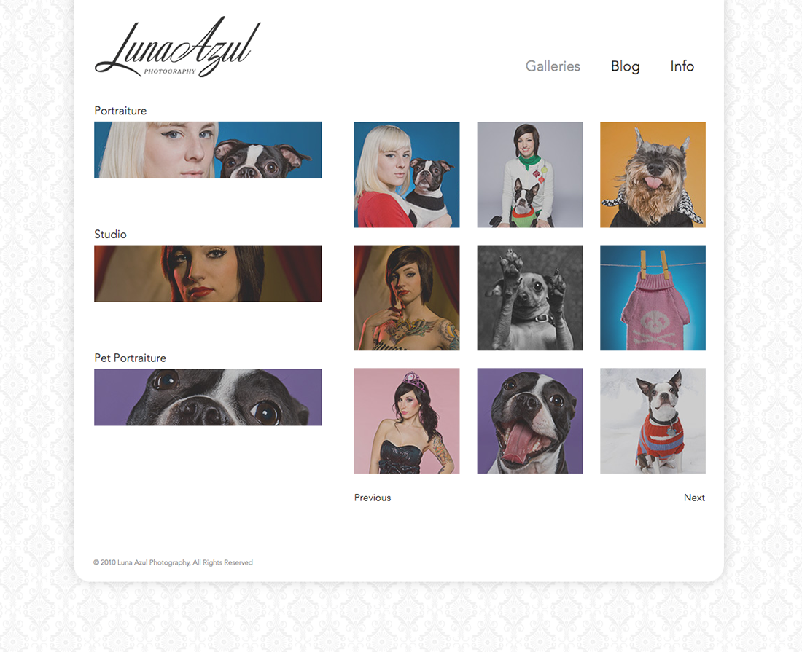

Luna Azul approached me to to create an identity, stationary and website design for her photography business specializing in colorful charismatic portraiture. Above shows some of the logo process, final logo, website prototype and stationary I developed for this client. A hand coded HTML/CSS/jQuery prototype I developed is linked to the right.
View Prototype 